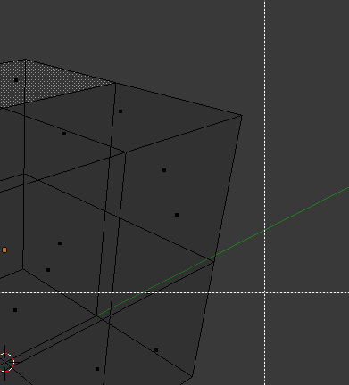
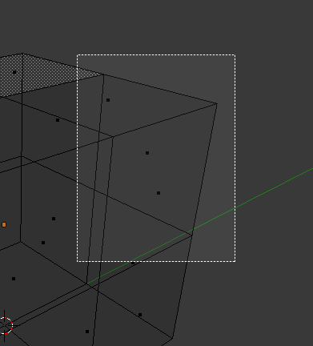
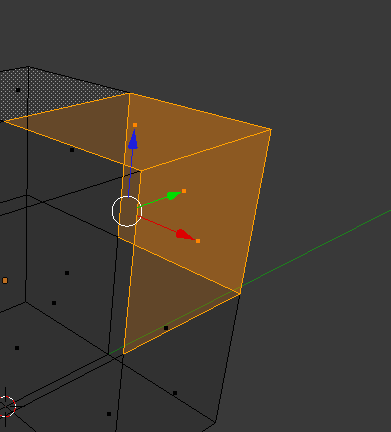
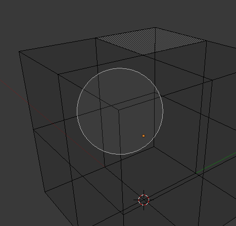
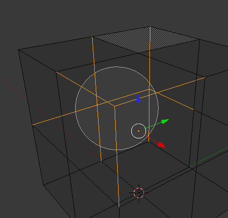
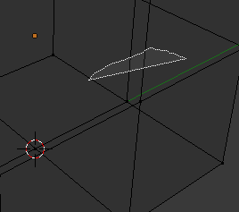
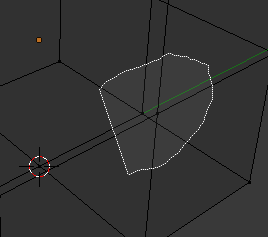
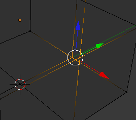

Basic Selection¶
Reference
RMB and Shift-RMBThe most common way to select an element is to RMB on that item;
this will replace the existing selection with the new item.
Adding to a Selection¶
To add to the existing selection, hold down Shift while right clicking.
Clicking again on a selected item will deselect it.
As in Object Mode, there is a unique active element, displayed in a lighter shade (in general, the last element selected). Depending on the tools used, this element might be very important!
Note that there is no option to choose what element to select between overlapping ones
(like the Alt-RMB click in Object Mode). However,
if you are in solid, shaded, or textured viewport shading mode
(not bounding box or wireframe),
you will have a fourth button in the header that looks like a cube,
just right of the select mode ones.
When enabled, this limits your ability to select based on visible elements (as if the object was solid), and prevents you from accidentally selecting, moving, deleting or otherwise working on backside or hidden items.
Selecting Elements in a Region¶
Reference
B, C, and Ctrl-LMB click and dragRegion selection allows you to select groups of elements within a 2D region in your 3D View. The region can be either a circle or rectangle. The circular region is only available in Edit Mode. The rectangular region, or Border Select, is available in both *Edit Mode and Object Mode.
注解
What is selected using both these tools is affected by the Limit Selection to visible feature (available under the 3D View) in Solid Viewport Shading Mode.
For example,
- in solid shading mode and face selection mode, all faces within the selection area will be selected;
- while in the wireframe shading mode and face selection mode, only faces whose handle are within the selection area will be selected.
Rectangular region (Border select)¶
Border Select is available in either Edit Mode or Object Mode. To activate the tool use the B.
Use Border Select to select a group of objects by drawing a rectangle while holding down LMB.
In doing this you will select all objects that lie within or touch this rectangle.
If any object that was last active appears in the group it will become selected and active.

Start. |

Selecting. |

Complete. |
{kind=link}
{kind=link}
{kind=link}
In Fig. Start., Border Select has been activated and is indicated by showing a
dotted cross-hair cursor. In Fig. Selecting.
the selection region is being chosen by drawing a rectangle with the LMB.
The selection area is only covering the selection handles of three faces. Finally,
by releasing LMB the selection is complete; see Fig. Complete..
注解
Border select adds to the previous selection,
so in order to select only the contents of the rectangle, deselect all with A first.
In addition, you can use MMB while you draw the border to deselect all objects within the rectangle.
Circular region¶
This selection tool is only available in Edit Mode and can be activated with C.
Once in this mode the cursor changes to a dashed cross-hair with a 2D circle surrounding it.
The tool will operate on whatever the current select mode is.
Clicking or dragging with the LMB,
causing elements to be inside the circle will cause those elements to be selected.
You can enlarge or shrink the circle region using NumpadPlus and NumpadMinus,
or the Wheel.

Before. |

After. |
{kind=link}
{kind=link}
Fig. Circle Region Select. is an example of selecting edges while in Edge Select Mode.
As soon as an edge intersects the circle the edge becomes selected.
The tool is interactive such that edges are selected while the circle region is being dragged with the LMB.
If you want to deselect elements, hold MMB and begin clicking or dragging again.
For Faces select mode, the circle must intersect the face indicators usually represented by small pixel squares; one at the center of each face.
To exit from this tool, click RMB, or press Esc.
Lasso region¶
Lasso select is similar to Border select in that you select objects based on a region, except Lasso is a hand-drawn region that generally forms a circular/round-shaped form; kind of like a lasso.
Lasso is available in either Edit Mode or Object Mode.
To activate the tool use the Ctrl-LMB while dragging.
The one difference between Lasso and Border select is that in Object Mode,
Lasso only selects objects where the lasso region intersects the objects’ center.
To deselect, use Ctrl-Shift-LMB while dragging.

Start. |

Selecting. |

Complete. |
{kind=link}
{kind=link}
{kind=link}
Fig. Lasso selection. is an example of using the Lasso select tool in Vertex Select Mode.
Additional Selection Tools¶
The select menu in edit mode contains additional tool for selecting components:
- (De)select All
A - Select all or none of the mesh components.
- Invert Selection
Ctrl-I - Selects all components that are not selected, and deselect currently selected components.
- More
Ctrl-NumpadPlus - Propagates selection by adding components that are adjacent to selected elements.
- Less
Ctrl-NumpadMinus - Deselects components that form the bounds of the current selection